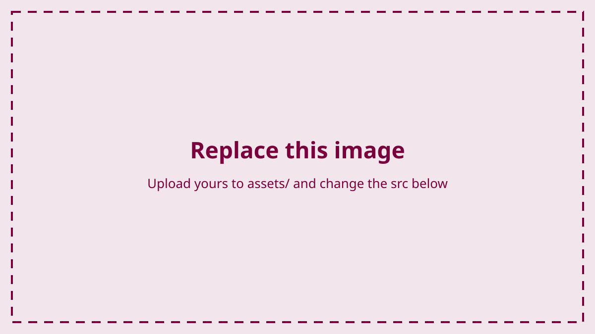

Laboratory 1
Voltage dividers
Two resistors in series split a supply voltage in proportion to their resistances. You will build one, measure what it actually does, and then predict what happens when you change it.
Before you measure anything
Build the divider
Put a 10 kΩ resistor and a 4.7 kΩ resistor in series across the 5 V rail, with the junction between them brought out to a spare row. That junction is the output of the divider, and it is the only place you will measure in this step.

Before you move on
At the bench
Measure it
Measure the voltage at the junction with respect to ground and type it below. Two resistors of 10 kΩ and 4.7 kΩ across 5 V put the junction near 1.6 V; the box accepts anything within 0.15 V of that, because ordinary resistors are not exact.
Before you change the circuit
Predict and explain
Your work
Everything you type is saved in this browser. Download a copy to keep it, or to carry it to another computer.
This browser is not saving data between visits. Download your work often; it is the only copy.